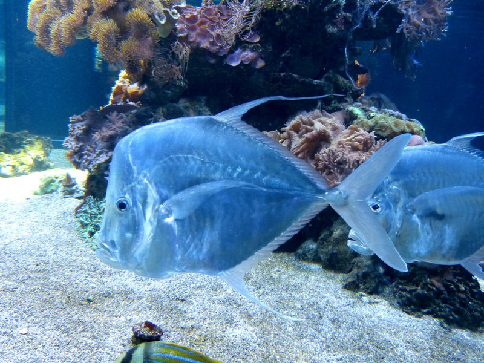
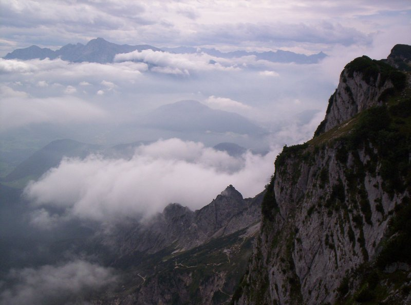
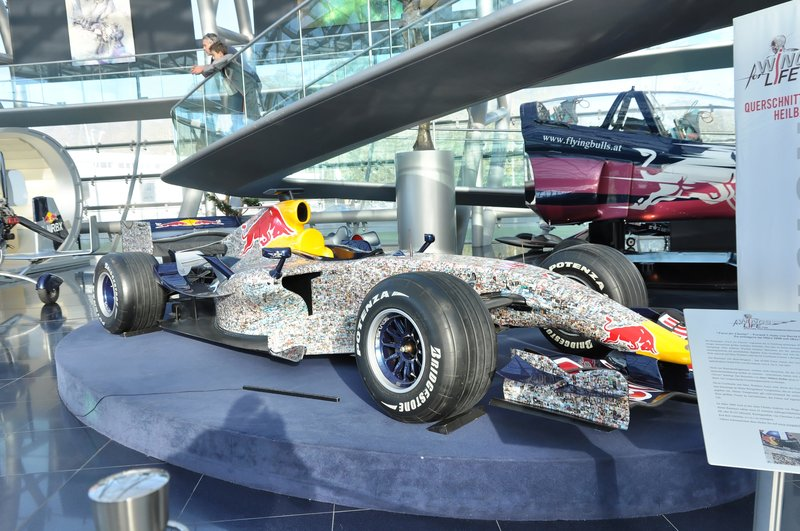
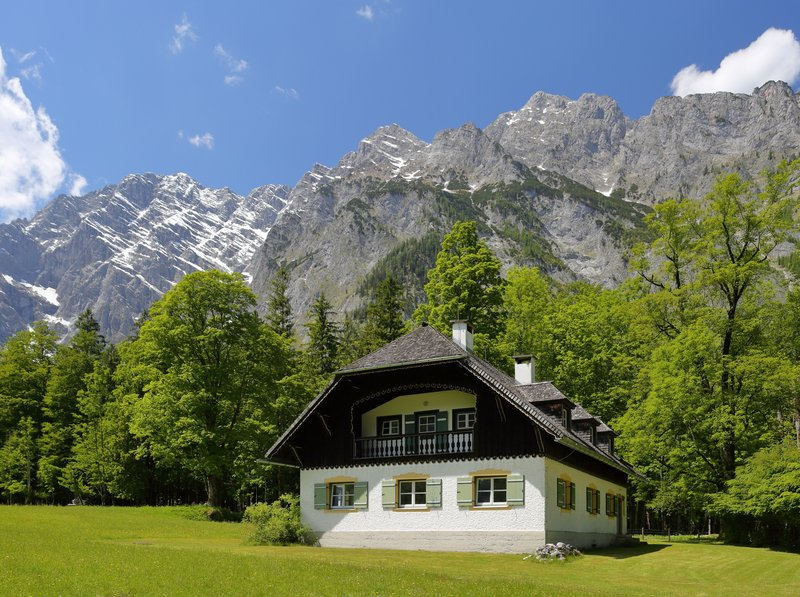
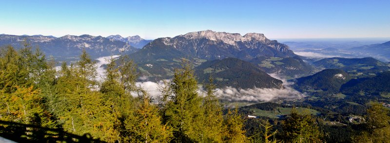

TRIP OVERVIEW
Day 1 – Hohensalzburg Fortress · St. Peter's Abbey & Catacombs · DomQuartier Salzburg · Nonnberg Abbey
Day 2 – Hellbrunn Palace & Trick Fountains · Kapuzinerberg
Day 3 – Mozart's Residence · Mirabell Palace & Gardens · Mozart's Birthplace · Haus der Natur · Museum der Moderne Mönchsberg
Day 4 – Untersberg · Salzwelten Hallein Salt Mine
Day 5 – Hangar-7
Day 6 · 🚆 Train Day · Innsbruck
Day 7 · 🚆 Train Day · Werfen · Eisriesenwelt Ice Caves
Day 8 · 🚆 Train Day · Vienna
Day 9 · 🚆 Train Day · Berchtesgaden · Königssee · Eagle's Nest
Day 1
From Hotel: 🚶 18 min · 🚕 4 min → Hohensalzburg Fortress
1. Hohensalzburg Fortress
One of the largest fully preserved medieval fortresses in Europe, crowning the Festungsberg above the old town; the FestungsBahn funicular carries you up to ramparts, state rooms and sweeping views.
🏛️ Daily 8:30am - 8:00pm
⏰ ~2 hr

🚶 2 min · 🚕 2 min → St. Peter's Abbey & Catacombs
2. St. Peter's Abbey & Catacombs
Founded around 696, the oldest monastery in the German-speaking world; its catacombs are hewn into the Mönchsberg cliff above a baroque cemetery of wrought-iron crosses and arcades.
🏛️ Daily 10:00am - 12:30pm · 1:00pm - 6:00pm
⏰ ~45 min
💵 Cash Only

🚶 2 min · 🚕 2 min → DomQuartier Salzburg
3. DomQuartier Salzburg
A single grand circuit through the Prince-Archbishops' Residenz state rooms, the cathedral's organ gallery and arcade terraces, and the abbey's art collections — baroque Salzburg's seat of power, all under one ticket.
🏛️ Daily 10:00am - 5:00pm
⏰ ~2 hr

🚶 7 min · 🚕 2 min → Nonnberg Abbey
4. Nonnberg Abbey
Founded around 714 AD and still an active Benedictine community, this is the oldest continuously occupied convent north of the Alps — the Romanesque church with its gilded Gothic altar, the graveyard and the terrace above the Altstadt rooftops are open to visitors.

🚶 6 min · 🚕 6 min → hotel
Day 2
From Hotel: 🚕 15 min → Hellbrunn Palace & Trick Fountains
1. Hellbrunn Palace & Trick Fountains
A 1615 prince-archbishop's summer villa built for play — hidden water jets soak the unwary, a water-powered mechanical theatre turns 200 figures, and grottoes still ambush visitors four centuries on.
🏛️ Daily 9:30am - 6:30pm
⏰ ~2 hr

🚕 13 min → Kapuzinerberg
2. Kapuzinerberg
A forested hill rising directly above the Salzach — stone steps climb past 17th-century fortification walls and the Capuchin Monastery to the Hettwer Bastei, a wide terrace with an uninterrupted view over the Altstadt rooftops to the Hohensalzburg Fortress and the Alps.

🚕 20 min → hotel
Day 3
From Hotel: 🚶 13 min · 🚕 6 min → Mozart's Residence
1. Mozart's Residence
The spacious apartment on the Makartplatz where the family lived from 1773 — original fortepianos, letters in Mozart's hand and the Sound & Film Museum show how the composer's work spread from Salzburg to the world.
🏛️ Daily 9:00am - 5:30pm
⏰ ~1 hr
⚠️ Combined ticket with Mozart's Birthplace available at shop.mozarteum.at.

🚶 3 min · 🚕 2 min → Mirabell Palace & Gardens
2. Mirabell Palace & Gardens
Baroque pleasure gardens laid out in 1690 — the flowered parterre, Pegasus fountain and Grand Staircase frame a postcard view of the fortress, and the steps and arbours feature in The Sound of Music.

🚶 7 min · 🚕 2 min → Mozart's Birthplace
3. Mozart's Birthplace
The yellow house at Getreidegasse 9 where Wolfgang Amadeus Mozart was born on 27 January 1756 — six rooms display his childhood violin, family portraits, original scores and the keyboard he played as a prodigy of five.
🏛️ Daily 9:00am - 5:30pm
⏰ ~1 hr

🚶 5 min · 🚕 2 min → Haus der Natur
4. Haus der Natur
One of Austria's top natural history museums — 80 exhibition rooms across 7,300 sq m: a life-sized moving Allosaurus, an aquarium with forty tanks of exotic fish and reptiles, a whale skeleton in the palaeontology wing, a space hall, and a three-floor Science Center.
🏛️ Daily 9:00am - 5:00pm
⏰ ~3 hr
⚠️ Last entry 4:30pm.

🚶 2 min · 🚕 2 min → Museum der Moderne Mönchsberg
5. Museum der Moderne Mönchsberg
A clifftop gallery clad in fine-grained Untersberg marble, reached by a glass-walled lift from the Altstadt — the permanent collection and rotating international exhibitions hang above a panoramic terrace with a sweeping view of the city.
🏛️ Tuesday - Sunday 10:00am - 6:00pm · Thursday 10:00am - 8:00pm
🚫 Closed Monday
⏰ ~1.5 hr
⚠️ Reached via the Mönchsbergaufzug lift at Gstättengasse 13 — elevator ticket included with museum admission.

🚶 14 min · 🚕 6 min → hotel
Day 4
From Hotel: 🚕 21 min → Untersberg
1. Untersberg
A cable car climbs from St. Leonhard to the 1,776 m Geiereck summit in under nine minutes, opening a panorama over Salzburg, the Salzkammergut lakes and the peaks of Berchtesgaden.
🏛️ Daily 8:30am - 5:30pm
⏰ ~2 hr

🚕 23 min → Salzwelten Hallein Salt Mine
2. Salzwelten Hallein Salt Mine
An underground world of shimmering salt galleries beneath the Dürrnberg plateau — the guided tour takes you through tunnels by wooden mine slide, crosses a briny underground lake by boat and tells the story of the Celtic salt trade that made Salzburg rich.
🏛️ Daily 9:00am - 5:00pm
⏰ ~2 hr
⚠️ Last guided tour departs at 3:30pm. Season March 28 to November 1 only.
.jpg)
🚕 28 min → hotel
Day 5
From Hotel: 🚕 14 min → Hangar-7
1. Hangar-7
Red Bull's aviation and racing museum at Salzburg Airport — the glass-and-steel hangar houses historic aircraft from inter-war biplanes to Cold War jets alongside Formula 1 cars and World Rally Championship vehicles; admission is free and the terrace overlooks the apron.
🏛️ Monday - Saturday 9:00am - 10:00pm · Sunday 9:00am - 5:00pm
⏰ ~1.5 hr
Free

🚕 15 min → hotel
Day 6 — Train Day · Innsbruck
From Hotel: 🚶 24 min · 🚕 12 min → Salzburg Hauptbahnhof
🚊 Salzburg Hbf → Innsbruck Hbf · ÖBB · 2h 15min
8:56am Salzburg Hbf → 11:11am Innsbruck Hbf
9:39am Salzburg Hbf → 11:58am Innsbruck Hbf
10:56am Salzburg Hbf → 1:11pm Innsbruck Hbf
ARRIVE Innsbruck Hbf: 🚶 13 min · 🚕 5 min → Goldenes Dachl
1. Goldenes Dachl
Built in 1497 for Emperor Maximilian I, this gilded oriel of 2,657 fire-gilded copper tiles juts over Herzog-Friedrich-Straße — the Innsbruck Museum inside the balcony tells the Habsburg story, while the glittering canopy above is one of Austria's most recognisable medieval landmarks.
🏛️ Tuesday - Sunday 10:00am - 5:00pm
🚫 Closed Monday
⏰ ~45 min
⚠️ May through September: 10:00am - 6:00pm. Closed throughout November.
.jpg)
🚶 3 min · 🚕 3 min → Hofburg Innsbruck
2. Hofburg Innsbruck
An alpine Habsburg palace rebuilt on Maria Theresa's orders in the 1770s — the White Hall is one of the grandest Rococo rooms in Austria, and the Imperial Apartments are hung with full-length portraits of her sixteen children arranged in order of birth.
🏛️ Daily 9:00am - 5:00pm
⏰ ~1.5 hr

🚶 5 min · 🚕 3 min → Nordkettenbahn
3. Nordkettenbahn
Zaha Hadid-designed stations carry you from the city-centre Congress stop up to the 2,269 m Hafelekar summit in three linked segments — the top opens a 360-degree panorama over the Inn Valley, the Ötztal peaks and the glaciers of the Stubai Alps stretching to the horizon.
🏛️ Daily 8:30am - 5:30pm
⏰ ~2 hr

🚶 20 min · 🚕 8 min → Innsbruck Hbf
🚊 Innsbruck Hbf → Salzburg Hbf · ÖBB · 2h 15min
5:48pm Innsbruck Hbf → 8:03pm Salzburg Hbf
6:16pm Innsbruck Hbf → 8:21pm Salzburg Hbf
6:48pm Innsbruck Hbf → 9:04pm Salzburg Hbf
ARRIVE Salzburg Hbf: 🚶 24 min · 🚕 12 min → hotel
Day 7 — Train Day · Werfen
From Hotel: 🚶 24 min · 🚕 12 min → Salzburg Hauptbahnhof
🚊 Salzburg Hbf → Werfen Bahnhof · ÖBB · 38 min
9:11am Salzburg Hbf → 9:49am Werfen Bahnhof
10:13am Salzburg Hbf → 10:55am Werfen Bahnhof
11:11am Salzburg Hbf → 11:49am Werfen Bahnhof
ARRIVE Werfen Bahnhof: 🚕 8 min → Eisriesenwelt
1. Eisriesenwelt Ice Caves
The world's largest accessible system of ice caves — 42 km of passages carved into the Tennengebirge by meltwater, where a guided tour by magnesium lamp leads through vaulted chambers of ice columns, frozen waterfalls and the vast ice cathedral of the Alexander Mörk-Dom.
🏛️ Daily 9:30am - 5:00pm
⏰ ~4 hr
⚠️ Season late April to late October only. Last guided tour departs at 3:45pm. From Werfen Bahnhof: Eisriesenwelt shuttle bus to cable car base station, cable car to Bergstation, 20-min walk to cave entrance.

🚕 8 min → Werfen Bahnhof
🚊 Werfen Bahnhof → Salzburg Hbf · ÖBB · 39 min
3:10pm Werfen Bahnhof → 3:49pm Salzburg Hbf
4:10pm Werfen Bahnhof → 4:49pm Salzburg Hbf
5:10pm Werfen Bahnhof → 5:49pm Salzburg Hbf
ARRIVE Salzburg Hbf: 🚶 24 min · 🚕 12 min → hotel
Day 8 — Train Day · Vienna
From Hotel: 🚶 24 min · 🚕 12 min → Salzburg Hauptbahnhof
🚄 Salzburg Hbf → Wien Hbf · ÖBB Railjet · 2h 25min
8:07am Salzburg Hbf → 10:32am Wien Hbf
9:07am Salzburg Hbf → 11:32am Wien Hbf
10:07am Salzburg Hbf → 12:32pm Wien Hbf
ARRIVE Wien Hbf: 🚶 10 min · 🚕 5 min → Upper Belvedere
1. Upper Belvedere
Prince Eugene of Savoy's 1722 baroque summer palace — the permanent collection centres on Gustav Klimt's The Kiss, displayed in its original gold-leaf oil on a gallery wall lit for the painting alone, surrounded by works by Schiele, Kokoschka, Monet and Van Gogh.
🏛️ Daily 9:00am - 6:00pm
⏰ ~2 hr

🚕 17 min → Schönbrunn Palace
2. Schönbrunn Palace
The Habsburg summer residence in imperial yellow — 1,441 rooms with state apartments where Mozart played at age six, Marie Antoinette grew up and Franz Joseph I died; the Grand Parterre gardens climb to a hilltop Gloriette with the best panorama of Vienna.
🏛️ Daily 9:30am - 6:30pm
⏰ ~2.5 hr

🚕 14 min → Wien Hbf
🚄 Wien Hbf → Salzburg Hbf · ÖBB Railjet · 2h 25min
6:28pm Wien Hbf → 8:53pm Salzburg Hbf
7:28pm Wien Hbf → 9:53pm Salzburg Hbf
8:28pm Wien Hbf → 10:59pm Salzburg Hbf
ARRIVE Salzburg Hbf: 🚶 24 min · 🚕 12 min → hotel
Day 9 — Train Day · Berchtesgaden
From Hotel: 🚶 24 min · 🚕 12 min → Salzburg Hauptbahnhof
🚊 Salzburg Hbf → Berchtesgaden Hbf · ÖBB + BRB · change Freilassing · 1h 20min
8:17am Salzburg Hbf → 9:38am Berchtesgaden Hbf
9:17am Salzburg Hbf → 10:38am Berchtesgaden Hbf
10:17am Salzburg Hbf → 11:38am Berchtesgaden Hbf
ARRIVE Berchtesgaden Hbf: 🚕 15 min → Königssee
1. Königssee
Bavaria's most pristine glacial lake, set entirely within Berchtesgaden National Park — electric-powered boats glide across the emerald water to the onion-domed St. Bartholomä church on the western shore, where the boatman demonstrates the natural echo off the canyon walls with a trumpet call.
🏛️ Daily 8:00am - 5:30pm
⏰ ~2.5 hr
⚠️ Season April 25 - October 11. Boats run every 30 min from Seelände dock. Arrive early — queues build quickly in peak season.

🚕 50 min → Kehlsteinhaus
2. Kehlsteinhaus · Eagle's Nest
Hitler's Alpine retreat at 1,834 m above Berchtesgaden — reached by the original 1938 mountain road and a 124 m elevator bored into the Kehlstein rock; the summit terrace opens a panorama over the Berchtesgaden Alps into Austria, and the historic rooms now house a restaurant.
🏛️ Daily 8:30am - 5:00pm
⏰ ~2 hr
⚠️ Season mid-May to late October. Bus ticket — includes elevator — required; buy online or at Dokumentation Obersalzberg terminal. Special bus RVO 849 departs every 25 min; last return 5:00pm.

🚕 45 min → Berchtesgaden Hbf
🚊 Berchtesgaden Hbf → Salzburg Hbf · BRB + ÖBB · change Freilassing · 1h 24min
3:19pm Berchtesgaden Hbf → 4:43pm Salzburg Hbf
4:19pm Berchtesgaden Hbf → 5:43pm Salzburg Hbf
5:19pm Berchtesgaden Hbf → 6:43pm Salzburg Hbf
ARRIVE Salzburg Hbf: 🚶 24 min · 🚕 12 min → hotel
🗓️ Weekly Closures
Museums & Galleries · Closed Monday and Tuesday
📅 Tours
Viator
The classic half-day tour to the film's settings — Leopoldskron and Hellbrunn, the Nonnberg convent, Mondsee's wedding church and the lakes of the Salzkammergut, with a guided pass through the old town.
⏳ 4 hr · 👥 Coach
🚶 13 min · 🚕 6 min
A small-group full day by minivan to Hallstatt and the 5 Fingers steel viewing platform cantilevered over the Dachstein glacier — the picture-perfect lakeside village and a short hike to a panoramic viewpoint. Maximum 8 per van.
⏳ 9 hr · 👥 max 8
🏨 ↔ 🚐
A small-group full day to Hallstatt including the world's oldest salt mine — prehistoric mine tunnels, the miner's slide and the Dachstein alpine scenery — maximum 8 passengers.
⏳ 8 hr · 👥 max 8
🏨 ↔ 🚐
A small-group minivan tour to the real Von Trapp story locations — the family villa, Leopoldskron Lake and the filming sites — with a guide who separates the true family history from the Hollywood legend. Maximum 7 passengers.
⏳ 4 hr · 👥 max 7
🏨 ↔ 🚐
A small-group coach tour from Salzburg across the German border to the Eagle's Nest — Hitler's mountain retreat atop the Kehlstein at 1,834 m — with the Obersalzberg Documentation Centre, Berchtesgaden village and panoramic Alpine views.
⏳ 8 hr · 👥 Small group
🚶 13 min · 🚕 6 min
GetYourGuide
A shared coach trip to the Eagle's Nest above Berchtesgaden — the panoramic terrace at 1,834 m reached by the original elevator carved into the mountain, with views across the Bavarian Alps, departing Mirabellplatz at 8:45am.
⏳ 4 hr 30 min · 👥 Coach
🚶 13 min · 🚕 6 min
A 5.5-hour coach half-day to the world's most photographed lakeside village — Hallstatt — with 2.5 hours of free time to explore the salt-miners' old town, the lake promenade and the church of Hallstatt on your own.
⏳ 5 hr 30 min · 👥 Coach
🚶 13 min · 🚕 6 min
A full-day combo ticket covering both of Salzburg's most popular day trips in one circuit — the alpine village of Hallstatt and the mountaintop Eagle's Nest above Berchtesgaden — with entrance tickets included.
⏳ 9 hr · 👥 Small group
🚶 13 min · 🚕 6 min
A small-group day south of Salzburg to the Werfen Ice Caves — the world's largest accessible ice cave system — and the medieval Hohenwerfen fortress on the cliff above the Salzach valley.
⏳ 6 hr · 👥 Small group
🚶 13 min · 🚕 6 min
📅 5. Salzburg Old Town · Mozart & Mirabell Gardens Walking Tour · GetYourGuide · 4.7⭐ · 626+ reviews
A 2-hour licensed-guide walk through the Old Town — Mirabell Palace gardens, Getreidegasse, Mozart's Birthplace, Salzburg Cathedral, and Residenzplatz — ending at Kapitelplatz with views of the fortress.
⏳ 2 hr · 👥 max 25
🚶 12 min · 🚕 5 min
TripAdvisor
A 5.5-hour coach half-day to Hallstatt departing from Mirabellplatz — 2.5 hours of free time in the lakeside village, with the option to enter the salt works or simply walk the lake promenade and the old town.
⏳ 5 hr 30 min · 👥 Coach
🚶 13 min · 🚕 6 min
A 4-hour small-group minibus tour by Bob's Special Tours to the real Von Trapp filming locations — the family villa, Leopoldskron Lake and the convent — maximum 8 passengers.
⏳ 4 hr · 👥 max 8
🏨 ↔ 🚐
A small-group full day to Hallstatt including the prehistoric salt mine — the mine tunnels, the miner's slide, and the alpine scenery — maximum 8 passengers in an air-conditioned minivan.
⏳ 8 hr · 👥 max 8
🏨 ↔ 🚐
📅 4. Full-Day Minivan Tour From Salzburg to Hallstatt with 5 Fingers · TripAdvisor · 4.5⭐ · 72+ reviews
A full-day small-group minivan to Hallstatt and the 5 Fingers steel platform above the Dachstein glacier — the village, the lake and the vertiginous mountain viewpoint — maximum 8 passengers.
⏳ 9 hr · 👥 max 8
🏨 ↔ 🚐
A two-hour guided walk through Salzburg's UNESCO-listed Altstadt — Mozart's birthplace, the Getreidegasse, the cathedral square, St Peter's cemetery and the old market — with a small-group local guide.
⏳ 2 hr · 👥 Small group
🚶 8 min · 🚕 5 min
☕ Cappuccino
Café Tomaselli · 4.2⭐ · 5000+ reviews
Café-Konditorei Fürst · 4.5⭐ · 1000+ reviews
Café Bazar · 4.2⭐ · 4800+ reviews
🏛️ Monday - Saturday 7:30am - 7:30pm · Sunday 9:00am - 6:00pm
🚶 7 min · 🚕 7 min
Kaffee Alchemie · 4.8⭐ · 3700+ reviews
🏛️ Monday - Friday 7:30am - 6:00pm · Saturday - Sunday 10:00am - 6:00pm
🚶 10 min · 🚕 6 min
🫕 Restaurants Near Hotel
Zum Eulenspiegel · 4.0⭐ · 800+ reviews
Atmospheric old-town tavern, classic Austrian plates and game.
🏛️ Daily 11:00am - 11:00pm
🚶 3 min · 🚕 3 min
Restaurant Triangel · 4.5⭐ · 990+ reviews
Market-driven Austrian cooking by the festival halls, organic and fair.
🏛️ Tuesday - Saturday 11:30am - 12:00am
🚫 Closed Sunday & Monday
🚶 5 min · 🚕 5 min
Zwettler's · 4.5⭐ · 5400+ reviews
Rustic 160-year-old wirtshaus, hearty Austrian portions and local beer.
🏛️ Tuesday - Saturday 11:30am - 1:00am · Sunday - Monday 11:30am - 10:00pm
🚶 9 min · 🚕 7 min
Bärenwirt · 4.5⭐ · 8700+ reviews
Historic 1663 Mülln inn — Backhendl, goulash and Augustiner beer.
🏛️ Daily 11:00am - 11:00pm
🚶 12 min · 🚕 8 min
🍽️ Downtown Restaurants
St. Peter Stiftskulinarium · 4.0⭐ · 130+ reviews
Refined Austrian fine dining inside Europe's oldest restaurant.
🏛️ Tuesday - Sunday 11:30am - 11:00pm
🚫 Closed Monday
Blaue Gans · 4.3⭐ · 300+ reviews
Modern Alpine-Mediterranean cooking in the city's oldest inn.
🏛️ Monday - Saturday 12:00pm - 12:00am
🚫 Closed Sunday
🍮 Local Tastes
Salzburger Nockerl
A cloud-light baked soufflé of whipped egg whites in three peaks, dusted with sugar to mimic the city's hills — sweet, warm and meant to be shared.
Original Salzburger Mozartkugel
A hand-rolled sphere of pistachio marzipan and nougat dipped in dark chocolate, invented by Paul Fürst in 1890 and still made by hand to the original recipe.
Bosna
Salzburg's own street-food sausage — bratwurst in a griddled white roll with onions, parsley and a curry-spiced mustard, born at the Balkan Grill on Getreidegasse.
Augustiner Bräu
Monastery-brewed beer poured from wooden kegs into stone steins, drunk in Salzburg's vast Mülln beer garden — a tradition running since 1621.
🎭 Shows, Performances & Concerts
Salzburg Marionette Theatre
World-famous marionette opera — full Mozart and Sound of Music productions performed by hand-carved puppets since 1913.
🚶 6 min · 🚕 8 min
Großes Festspielhaus
The Salzburg Festival's grand hall — opera and the world's leading orchestras on a 100-metre stage carved into the Mönchsberg.
🚶 8 min · 🚕 8 min
🚆 Train Stations Near Hotel
🚊 Salzburg Hauptbahnhof
ÖBB Railjet and regional lines → Vienna · Hallstatt · Munich · Innsbruck.
🚶 24 min · 🚕 12 min
⛲️ Day Trips by Train
Linz · 1 hr 10 min
Upper Austria's third city — the Lentos Museum of modern art on the Danube, the vast Ars Electronica Center on digital culture, and the old city around Hauptplatz. Fast Railjet trains run direct on the Westbahn corridor.
Bad Ischl · 1 hr 20 min
Emperor Franz Joseph's summer retreat on the Traun river — the Kaiservilla where he hunted for 60 summers, the Imperial Salt Spa and the lakeside market town that anchors the Salzkammergut; change at Attnang-Puchheim.
Kufstein · 1 hr 20 min
Tyrolean market town on the Inn River dominated by a medieval hilltop fortress — the Heldenorgel is the world's largest outdoor pipe organ, 4,948 pipes bored into the Bürgerturm, playing a daily noon concert; also a military history museum, cobblestone old town, and alpine views into Bavaria.
Munich · 1 hr 30 min
Bavaria's capital across the border — Marienplatz, the Residenz and the English Garden; direct regional and EuroCity trains run there in 1 hr 30 min.
Hallstatt · 2 hr 35 min
⭐ Michelin Restaurants
⭐⭐ Ikarus
Rotating residency of the world's top guest chefs in the Red Bull Hangar-7.
🚕 10 min
Salzburg rewards looking up. The fortress watches the whole city, the Mönchsberg and Untersberg ring it in green and grey, and from the Mirabell parterre the castle lines up perfectly above the flowerbeds.
Time your two days around the light. The Altstadt is at its best in the morning before the day-trippers arrive; the south — Hellbrunn's gardens and the Untersberg summit — glows in the long afternoon. Carry cash for the catacombs, keep a little time for the trick fountains' surprises, and let the rest unfold on foot between river and rock.